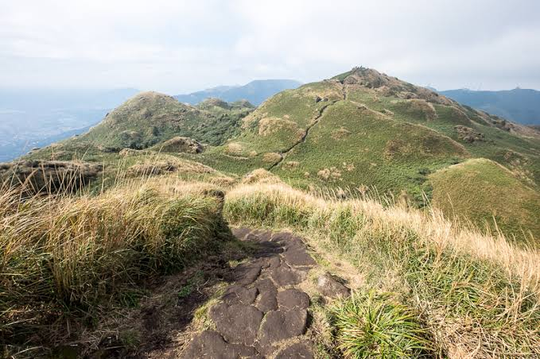
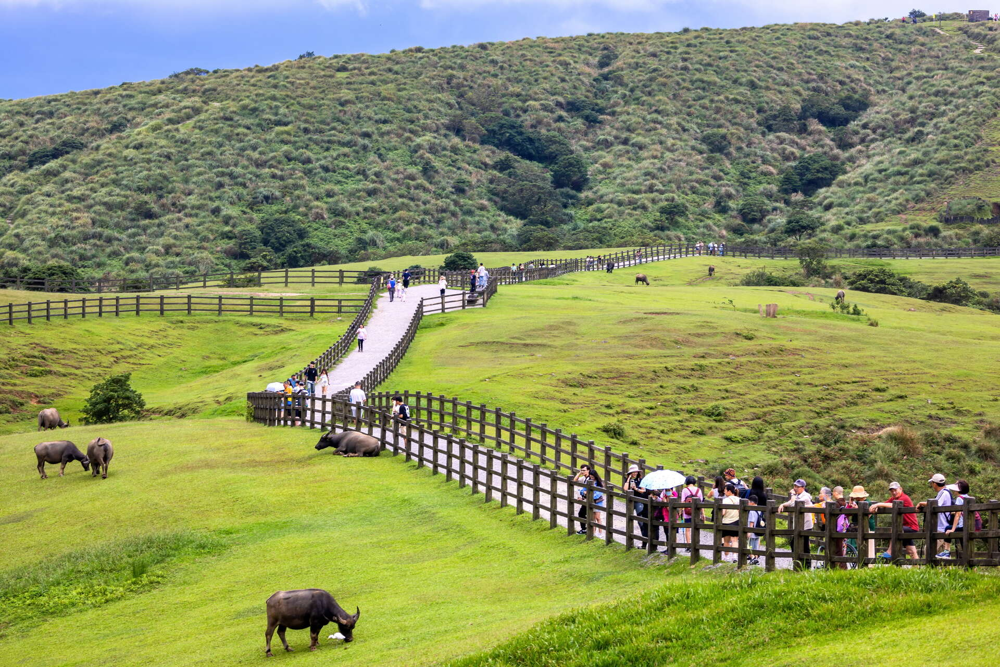
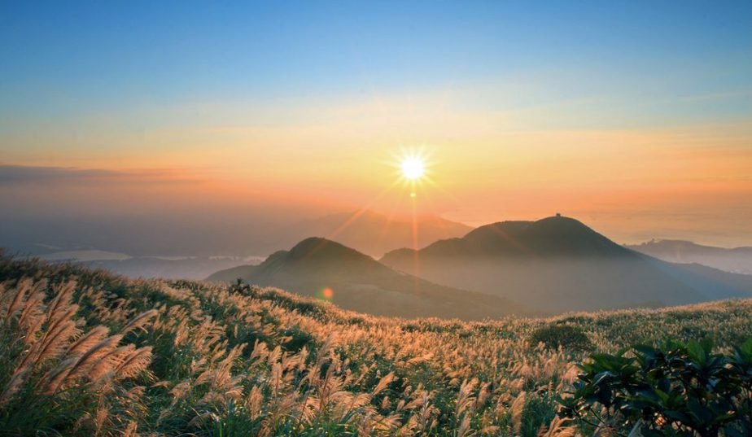

- Region
- North · Taipei City
- Difficulty
- Moderate
- Time needed
- Half day to full day
- Best months
- Feb–Apr, Oct–Nov
What to do
Hike Qixingshan's main peak
Qixingshan (七星山) is the highest mountain in Taipei at about 1,120 m. From Xiaoyoukeng the climb takes about 1–1.5 hours on stone steps.
See the Xiaoyoukeng fumaroles
At Xiaoyoukeng (小油坑) you can watch sulfur steam pour out of the hillside, a reminder that this is a volcanic area.
Walk the Qingtiangang grassland
Qingtiangang (擎天崗) is a wide, windy meadow where water buffalo graze. Easy walking, great for a picnic.
Soak your feet at Lengshuikeng
After the hike, rest your legs in the free public foot bath at Lengshuikeng (冷水坑).
Flower season at Zhuzihu
In spring, the fields of Zhuzihu (竹子湖) are full of white calla lilies you can pick yourself.
What to eat
Farm-style mountain dishes 野菜土雞
Restaurants around Zhuzihu serve stir-fried wild greens and free-range chicken.
Hot spring eggs 溫泉蛋
Eggs slow-cooked in hot spring water are a classic snack in volcanic areas.
Beitou hot spring area food 北投
On the way home, stop in Beitou for a soak and a bowl of noodles near the MRT station.
Getting there
- From Taipei Main Station, take the MRT Red Line to Jiantan (劍潭) station. about 10 min
- Take bus Red 5 (紅5) or 260 up the mountain to Yangmingshan Bus Station (陽明山總站). about 30–40 min
- Change to the park shuttle bus 108, which loops around the park. Get off at Xiaoyoukeng to start the Qixingshan hike. about 15 min
Weekend shuttle buses can be full; go early in the morning. Driving is possible but parking fills up fast on weekends.
Best season
Spring brings cherry blossoms (around Feb–Mar) and calla lilies (around Mar–May). Autumn is clear and cool, and the hills turn silver with pampas grass. Winter is often foggy, windy and wet at the top, and summer afternoons bring thunderstorms.
Photos



Tips
- Weather on the mountain changes fast. Pack a rain jacket even on a sunny day.
- Keep a respectful distance from the water buffalo at Qingtiangang.
- Bring a jacket in winter; it can be 5–8 °C colder than in the city.
- Stay on marked paths near the fumaroles, as the ground and gases can be dangerous.
Last checked: 2026-11. Bus routes, train times and opening hours change, so please confirm on official websites before you go.